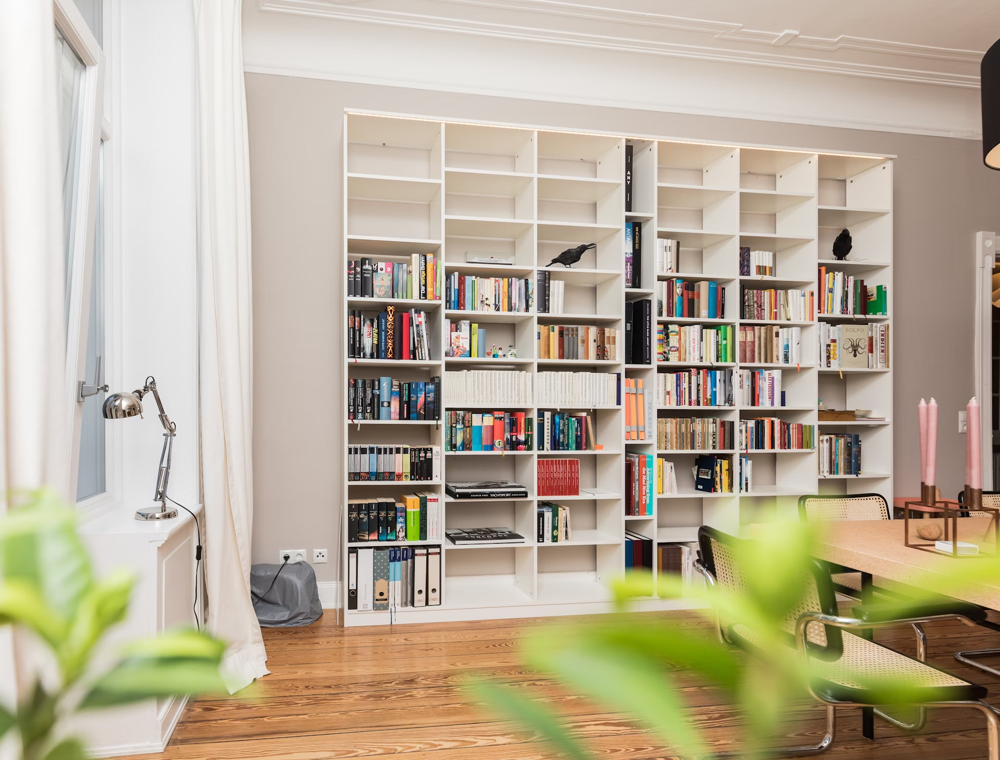

Sustainable Luxury: Eco-Friendly Choices for a Green Home
Explore how sustainable materials and eco-friendly practices can create a luxurious, yet environmentally conscious home.
Reading Time: ~4-5 minutes.
The trend towards sustainable living has made its way into the realm of luxury design. Eco-friendly choices no longer mean sacrificing style or quality. Here's how you can incorporate sustainable luxury into your home, ensuring it's both beautiful and environmentally responsible.
-
Choose Sustainable Materials
Opt for materials that are renewable, recycled, or sustainably sourced. Bamboo, reclaimed wood, and organic cotton are excellent choices that combine luxury with sustainability.
-
Invest in Quality, Durable Items
Sustainable luxury is about quality over quantity. Invest in well-made, durable items that will last a lifetime. This reduces waste and ensures your home remains stylish and functional for years to come.
-
Use Non-Toxic Paints and Finishes
Non-toxic, low-VOC paints and finishes are better for your health and the environment. They reduce indoor air pollution and are available in a wide range of colors and finishes to suit any style.
-
Incorporate Energy-Efficient Lighting
Choose LED lighting or energy-efficient fixtures to reduce energy consumption. These options are not only better for the environment but also contribute to a sophisticated and modern look.
-
Embrace Minimalism
Minimalism is inherently sustainable. By reducing clutter and choosing multipurpose items, you create a more organized and efficient space. This approach also enhances the luxurious feel of your home.
-
Support Local Artisans
Buying from local artisans not only supports the community but also reduces the carbon footprint associated with shipping. Look for unique, handcrafted items that add character and luxury to your home.
-
Incorporate Greenery
Plants not only beautify your space but also improve air quality. Choose low-maintenance varieties or create a small indoor garden to bring a touch of nature into your home.
-
Upcycle and Repurpose
Upcycling and repurposing old furniture and decor can be both sustainable and stylish. With a little creativity, you can transform old items into unique pieces that add a luxurious touch to your home.
-
Opt for Eco-Friendly Fabrics
Choose fabrics made from natural fibers like organic cotton, linen, or hemp. These materials are not only environmentally friendly but also offer a luxurious feel and appearance.
-
Reduce, Reuse, Recycle
Adopt a reduce, reuse, recycle mindset. This principle can guide your purchasing decisions and help you maintain a sustainable and luxurious home environment.
Embracing sustainable luxury in your home decor allows you to create a beautiful, high-end space that is also environmentally conscious. By making thoughtful choices and prioritizing quality, you can enjoy the best of both worlds—a stunning home that supports a healthier planet.
More Articles

How to Create a Luxurious Cozy Bedroom
Transforming your bedroom into a sanctuary of luxury and coziness is all about striking the perfect balance between elegance and comfort. A well-designed bedroom is not just a place to sleep; it's a personal retreat where you can unwind and rejuvenate. Here's how you can create a luxurious, cozy bedroom that exudes sophistication and warmth.
Read MoreThe Art of Minimalist Design: How to Achieve a Luxurious Look with Less
In the world of interior design, minimalist design has gained acclaim for its ability to achieve sophistication through simplicity. Embracing the “less is more” philosophy, minimalist design focuses on clean lines, functional spaces, and a restrained color palette to create a serene and luxurious environment. If you’re looking to infuse your home with a touch of elegance while keeping things simple, here’s how you can master the art of minimalist design.
Read More
Maximizing Small Spaces: Luxury Design Tips for Compact Living
Living in a smaller space doesn't mean you have to sacrifice luxury. With the right design approach, you can create a comfortable and stylish environment that feels much larger than it is. Here are some tips to help you maximize small spaces with luxurious design elements.
Read More